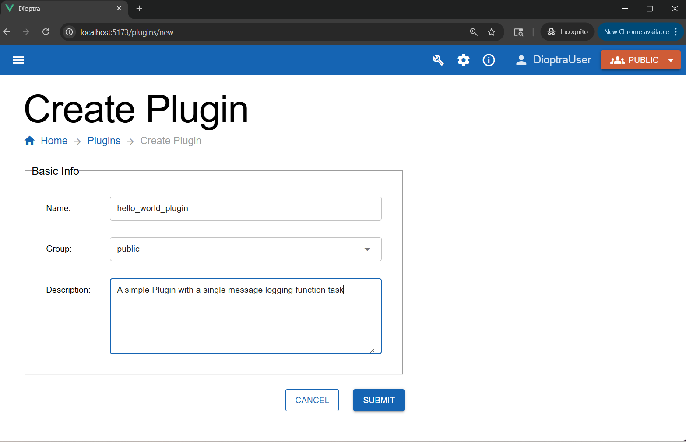
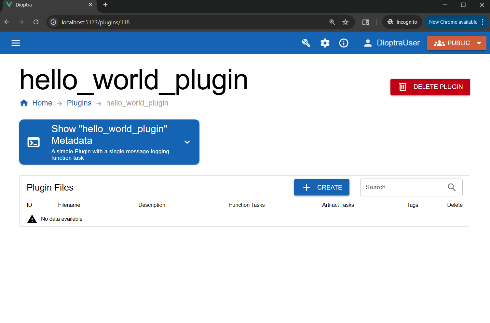
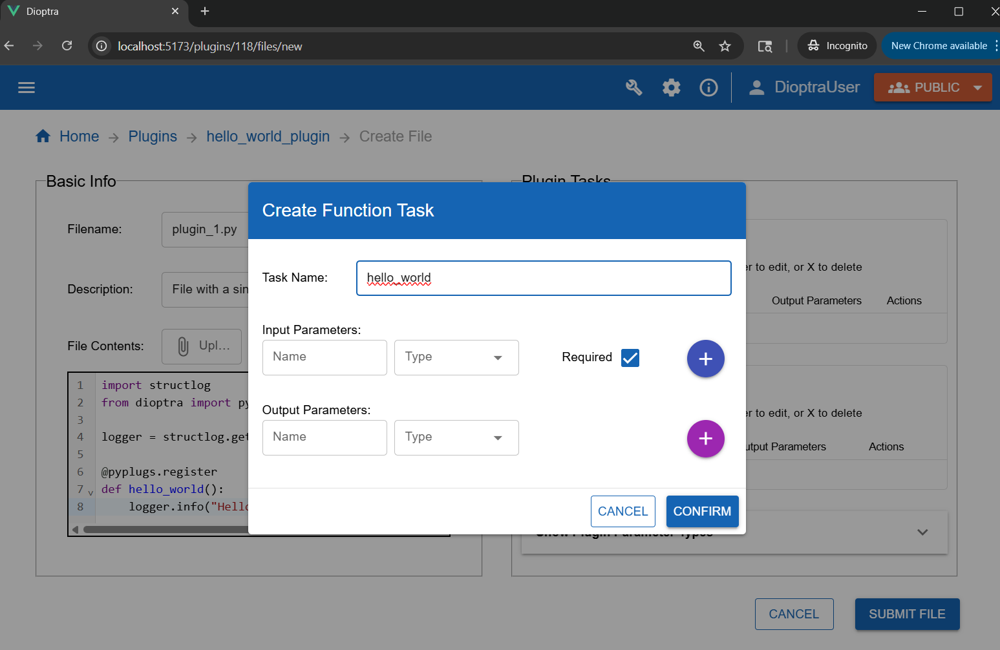
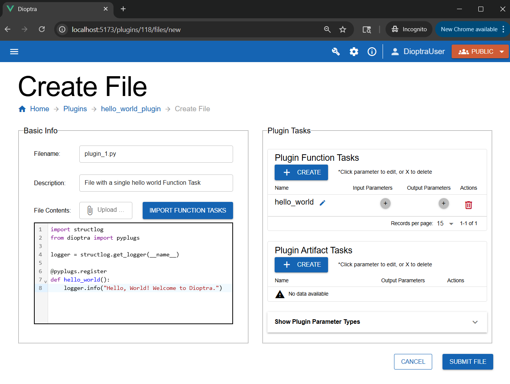
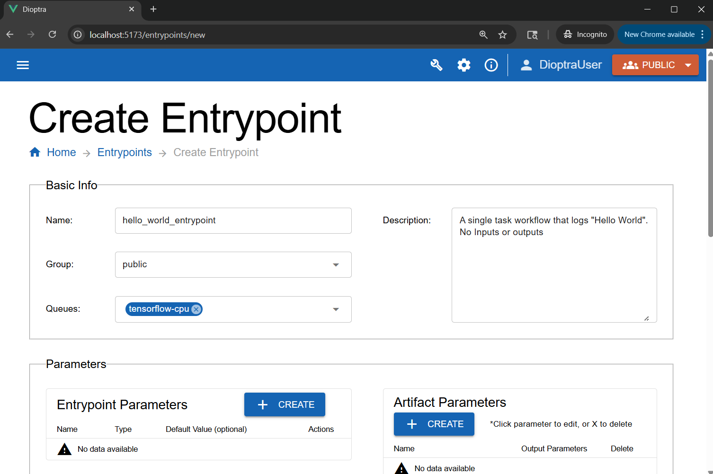
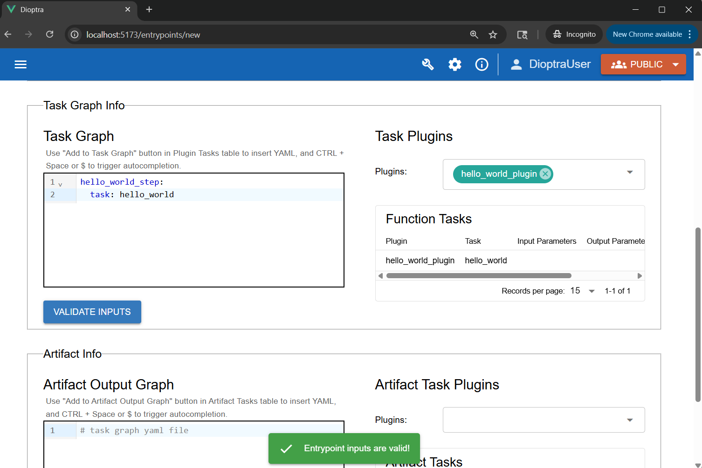
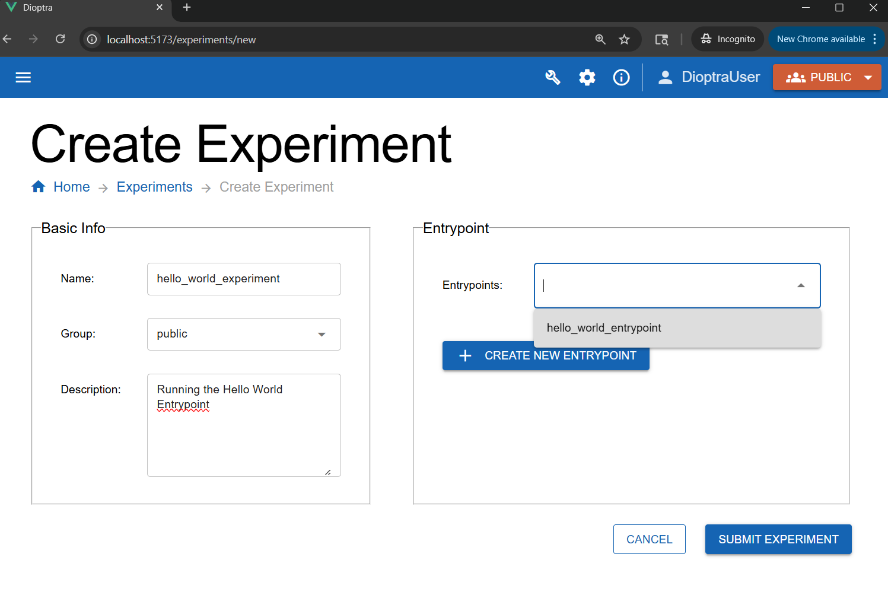
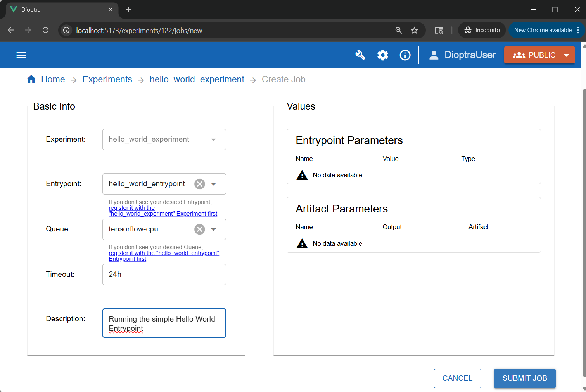
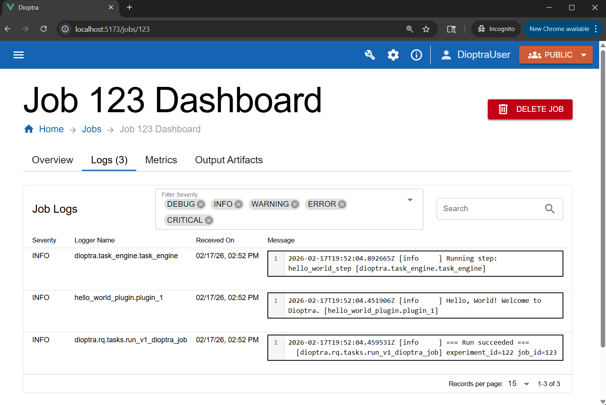

Running Hello World#
This tutorial explains how to run a simple “Hello World” workflow in Dioptra using the Guided User Interface (GUI). You will learn the essential lifecycle of a Dioptra task: writing code, creating a plugin, defining an entrypoint, and running a job.
Prerequisites#
Before starting, ensure you have installed Dioptra and completed the setup step of this tutorial.
Hello World Workflow#
Our goal is to run a Python function that prints a message to the Dioptra logs.
Step 1: Prepare Python Code#
First, we need the Python code that defines our task. We will use the structlog library to ensure our message appears in the Dioptra job dashboard.
hello_world.py
import structlog
from dioptra import pyplugs
logger = structlog.get_logger(__name__)
@pyplugs.register
def hello_world():
logger.info("Hello, World! Welcome to Dioptra.")
Copy the code above (you will paste it into the GUI in the next step).
Note: The code uses the
@pyplugs.registerdecorator to turn a standard function into a Plugin Function Task. Learn More.
Step 2: Create the Plugin#
We must create a container for our code and register the task in the system.
In the GUI, navigate to the Plugins tab.
Click the Create button in the Plugins table.
Enter the name
hello_world_pluginand add a short description. Click Submit.

Creating the Hello World Plugin Container#
In the plugin list, click the row corresponding to the Hello World Plugin you just created to go to the Plugin Files table.

The created Hello World Plugin container#
In the Plugin Files table, click Create to add a new file.
Name the file
plugin_1.py, add a description, and paste the code from step 1 into the editor.
Register the Task
In the Task Form (on the right side of the editor), register the function. Click the Create button under the Plugin Function Tasks table. Enter the following:
Task Name:
hello_world(Must match the Python function name exactly).Input/Output Parameters: Leave blank - Our function has no inputs and returns no outputs.
Click the Confirm button to finish task registration.

Registering the Python function as a Plugin Task#
Click Submit File.

The Plugin file with our registered hello world task#
Step 3: Create an Entrypoint#
Entrypoints define the workflow (Task Graph) that sequences our tasks. Our workflow is one with a single task only.
Navigate to the Entrypoints tab.
Click the Create button in the Entrypoints table.
Name it
hello_world_entrypointand add a brief description.In the Queues section, attach the
tensorflow-cpuQueue we created in the setup step of this tutorial.

Scroll down. In the Task Plugins window, select the
hello_world_pluginwe created earlier.In the Task Graph YAML editor, paste the following YAML:
Entrypoint Task Graph
hello_world_step: # Task name
task: hello_world # One of our registered tasks
Click Validate Inputs (it should pass as there are no parameters).

Defining the workflow structure in the Entrypoint editor.#
Click Submit Entrypoint.
Step 4: Create Experiment & Job#
To execute the entrypoint, we must place it inside an Experiment and run it as a Job.
Navigate to the Experiments tab and click the Create button in the Experiments table.
Name it
hello_world_experiment.In the Entrypoint dropdown, select
hello_world_entrypoint.

Creating the hello world experiment#
Click Submit Experiment.
Once the experiment is created, click on the experiment - the Experiment’s Job page should appear.
In the jobs table, click Create.
Select the
hello_world_entrypoint.Select the
tensorflow-cpuqueue (which we created in the previous tutorial step) - attach it now if you forgot to attach it previously.Add a short description, and then click Submit Job.

Submitting the job to the queue.#
Step 5: Inspect Logs#
The job will transition from Queued to Finished. We can verify the code ran by checking the logs.
In the Jobs tab, click the job you just ran.
Navigate to the Logs tab within the job details.

Viewing the execution logs.#
You should see the following message generated by hello_world_plugin.plugin_1:
Job Log Output
[info ] Hello, World! Welcome to Dioptra. [hello_world_plugin.plugin_1]
Note
If the Job never transitions out of the “Queued” state, there may be an issue with your Queue / Worker configuration. The tensorflow-cpu Queue is meant to
directly communicate with the tensorflow-cpu worker, one of the default workers available as a pre-built container. The name of the
queue must exactly match the Worker configuration file (Learn More).
Conclusion#
You have successfully run your first Dioptra job! You wrote a Python function, wrapped it in a Plugin, sequenced it in an Entrypoint, and executed it using the GUI.
See Also#
To understand in greater depth all the components utilized in this experiment, reference Dioptra Components Explanation. You can also find syntax and file requirements in Dioptra Components Reference.
Next Steps#
Now that you have the basics down, let’s learn about more advanced functionality of Dioptra.
Learning the Essentials - Tutorial to learn about entrypoint parameters, artifacts, and multi-task workflows.